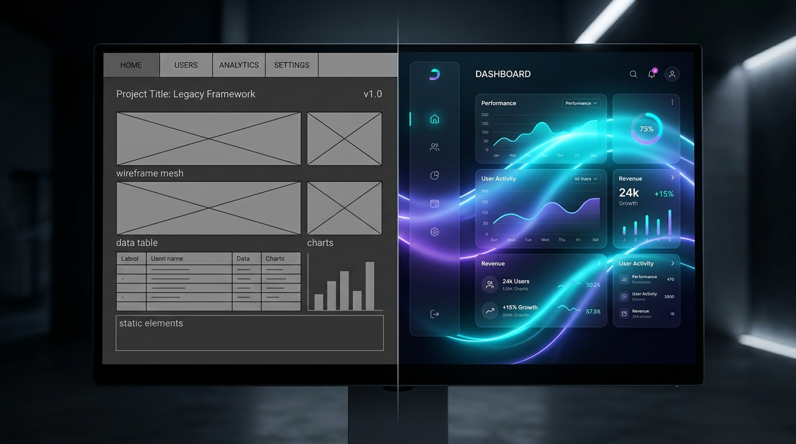
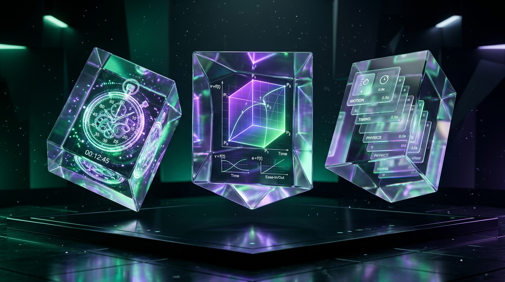
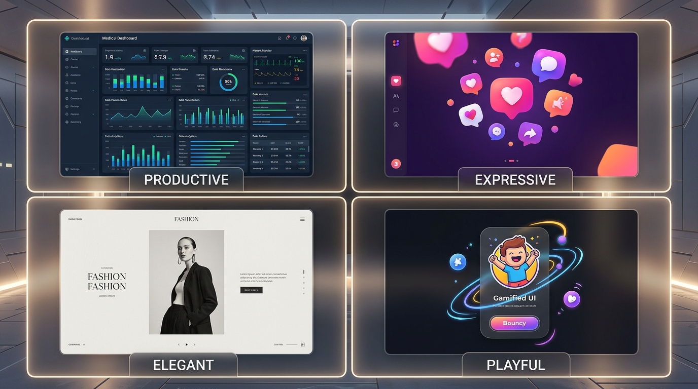

Motion bukan sekadar pemanis kosmetik, melainkan jembatan komunikasi antara logika sistem dan persepsi otak manusia.


Prinsip klasik animasi abad ke-20 diwujudkan langsung dalam transformasi GPU modern: tombol menekan sebelum meletup, bayangan merespons gerakan.
Morphing satu tombol: Idle ➔ Hover ➔ Loading Spinner ➔ Success Checkmark tanpa reload layar.
transform & opacity. Nol layout thrashing, hemat konsumsi daya baterai.